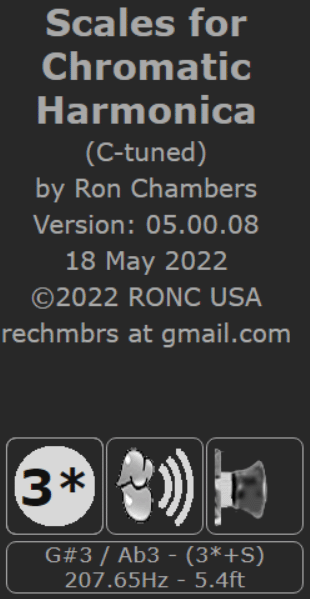
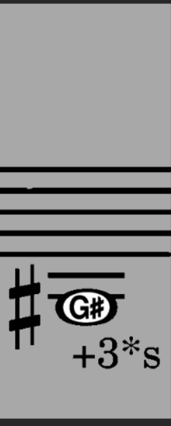
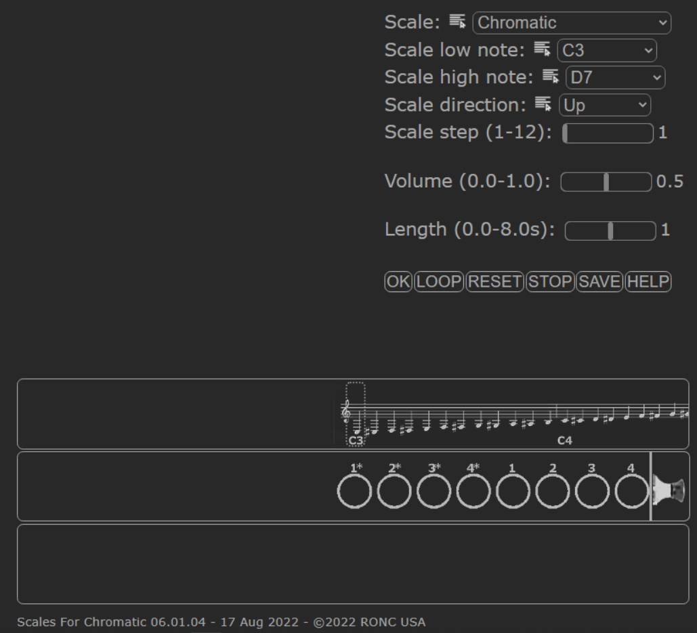
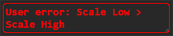
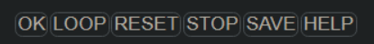
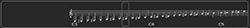
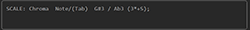

|
Scales for Chromatic Harmonica (S4CH)
S4CH is like a set of flash cards, from years ago, but adds the sound of the note and how to locate it's proper hole on a c-tuned chromatic harmonica. Chromatic, standard major/minor key scales, and major/minor Pentatonic scales are provided. These scales can be heard and seen going: Up, Down, Up / Down, Down / Up, or Random directions. Looping multiple times on a scale is available as is limiting the note range and setting the note step interval. Note duration of up to 8 seconds and a volume control are also provided. *** Parameter selection must be made before clicking OK/LOOP as the parameter selection is not interactive. *** The sound provided is from midi synthesis and is not the best quality (personal evaluation). The web page is usable on Win, MAC, Linux, Android, iPhone, iPad.... In most cases, landscape view will be the preferred viewing direction. On small screens in portrait view with less than 1080px in width, landscape is a must. This web page is free to use. It is also open-source. If you desire to make a donation, please do so to your local Children's Hospital or local food bank. Future plans are limited.
|
|||
| Help areas (click to go to specific area) | |||
| Panel 1 | ||
|  |
Pictorial tab information:
|
Note technical information:
|
 (shown) /
Inhale
(shown) /
Inhale 
 /
Slide in
/
Slide in  (shown) .
(shown) .
| Panel 2 | ||
|  |
Note information:
|
Tab below staff and ledger lines example (+3*s):
|
| Panel 3 | ||
|   |
| Parameter selection | ||
| Setup item | Default value | Option list |
| Scales | Chromatic |
*** Not changeable while playing. *** |
| Lowest note of Scale. | C3 |
This is for limiting the range of notes within the chosen scale. Those notes below the lowest and those above the highest pitched will be omitted from the selected scale when played. For 12 hole chromatics, use C4 to bypass the lower octave of the 16 hole harmonica. Only enharmonic pitches which are not whole pitch equivalents are shown. *** Not changeable while playing. *** |
| Highest note of Scale. | D7 | |
| Direction of Scale | UP |
This is for changing the Direction of the scale. The
usable values are: Up, Down, Up / Down, Down / Up, and
Random.
Random is best used with a short range of notes. One octave or so. See Lowest note of Scale and Highest note of Scale parameters to limit range of notes. Increasing the Note Length parameter may help you also. *** Not changeable while playing. *** |
| Step within Scale | 1 |
This is for changing the Interval between notes. Range 1
- 12. Step size is 1. One octave between notes will be
seen with a 12. This does not generate arpeggios but
every nth note sequences. Very useful for learning the
sounds of intervals.
*** Not changeable while playing. *** |
| Note Volume | 0.5 |
This is for changing the Volume. Range of 0.0 - 1.0.
Step size is 0.05.
*** Not changeable while playing. *** |
| Note Length | 1.0 sec |
This is for changing the Length or duration of each
note. Range of 0.0 - 8.0 sec. Step is 0.05 for lengths
of 0 sec through 1 sec and is 1.0 from 1 sec through 8
sec.
A value of 1 sec is equivalent to 60 bpm, 0.5 sec
is 120 bpm, and 0.25 sec is 240 bpm.
*** Not changeable while playing. *** |
| Buttons |  | |
| OK | Execute a single pass through the selected scale. Execution will cease on its own. | |
| LOOP | Execute multiple continuous passes through the selected scale. STOP or RESET must be used to stop the execution. | |
| RESET |
Because the user parameters are "sticky", you must
either click RESET or browser refresh to get back to the
default values. RESET ceases execution of the scale
when current note is finished.
DIALOG:
Choose either to reset user parameters:
|
|
| STOP | Cease execution of the scale when current note is finished. | |
| SAVE | Save user setup for loading on subsequent runs. Restore the setup to the default setup by clicking the RESET button followed by the SAVE button. The SAVE option is useful for limiting the note range for 12 hole chromatics and many other uses. | |
| HELP | Open this HELP document. | |
| Error information | ||
| Error message in red text. RESET must be used to clear the error. | ||
| Note position within the Chromatic scale | ||
|  | The note being played and displayed above is shown relative to it's location within the Chromatic Scale by the surrounding dotted rectangle. | |
| Hole position within the Chromatic harmonica mouthpiece | ||
The hole being played and displayed above is shown
relative to it's location within the Chromatic harmonica
mouthpiece. Whether it is Inhaled or Exhaled and whether
the slide is out or in is shown.
|
||
| Recap | ||
|  |
Listing of the Scale played then a table of note names
and tabs. The note name-tab pairs are separated by a ,
and the tab is surrounded by ().
This is an example of text in the recap: SCALE: Chroma NOTE-NAME(TAB),: G#3 / Ab3(3*+S), ... This item can be copied for later use. To use, Click in open area of field, Ctrl-A to select all, Ctrl-C to copy, and Ctrl-V to paste into your desired text file. |
|
| Note sound | ||
| Sound |
The audio used was generated using Musescore 3 to
generate a score which is converted to sound with the
internal Midi synthesis algorithm (A4 = 440 Hz). The
timbre is typical of Midi synthesis which tries to
emulate an actual instrument.
The emulation is poor in my evaluation as actual 4 sec sound files from a 16 hole chromatic harmonica do not exist. |
|
| Recording | ||
| Audio |
If the program is used to generate repetitive flows,
it might be easier to record the raw session from the
computer (not from your instrument) and then playback
the recording for practice or other use.
Recording of the audio output is easily done on: PCs Record audio on Windows. MACs Record audio on MAC. OTHERS Search the web. Key is to record internal sound not the sound through the speakers/microphone. |
|
| Audio/Video |
If the program is used to generate repetitive flows, it
might be easier to record the session and then playback
the recording for practice or other use.
Recording of the audio/video output is easily done on: PCs, MACs, and others using OBS Studio. |
|
| Stuff | ||
| Browsers |
Clean your browser's cache regularly as files used
will go missing after a while and the program will not
execute properly. A forced refresh (CTRL-F5 Win or
Shift-Command-R Mac for most browsers. For others
search web.) is required to make sure all files are
available.
Claims are made that a browser is HTML5 standard but even Chrome differs from device-to-device and from the HTML5 standards. This is especially true on all phones and pads. Positioning of items on various devices maybe different. In running the program on phones and pads, it maybe useful to run in the browser in "INCOGNITO Mode" which will force the loading of the files directly from the server. |
|
| Internet | If the program seems to be slow in loading, it is downloading a number of files and building an internal database for faster use in execution. | |
| Permissions | Permission to use the audio system must be set to yes or the notes will not be audible. | |
| Known limits |
Short length notes (less than 0.25 sec) might be too
fast for some devices. This is shown by skipped or
weakened notes.
Lack of quality of note timbre is due to poor midi synthesis. Two(2) sec recording of each note by someone with good tone on a real 16 hole instrument would be appreciated. PLEASE!!! |
|
| Me | ||
| Copyright | ||
| Copyright |
LICENSE AND COPYRIGHT
This program is free software; you can redistribute it and/or modify it under the terms of the GNU General Public License as published by the Free Software Foundation; either version 2 of the License, or (at your option) any later version. This program is distributed in the hope that it will be useful, but WITHOUT ANY WARRANTY; without even the implied warranty of MERCHANTABILITY or FITNESS FOR A PARTICULAR PURPOSE. See the GNU General Public License for more details. |
|